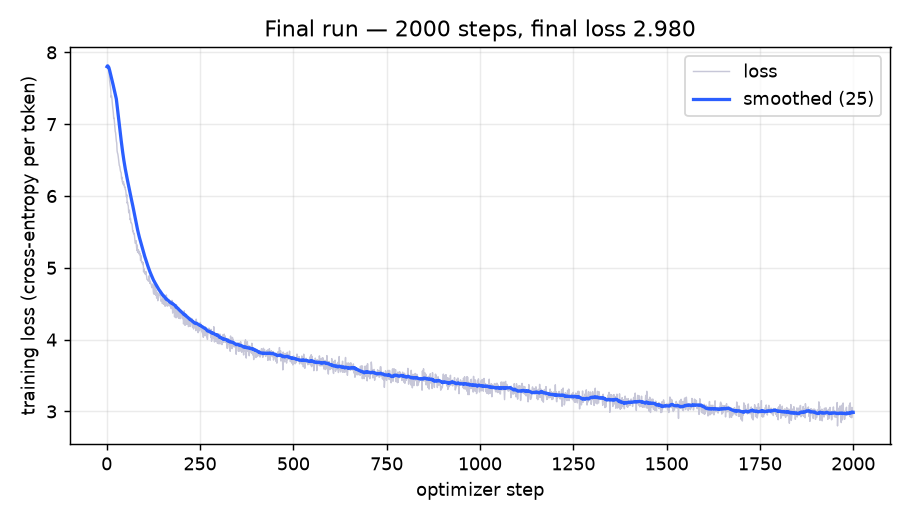

plivo-ml-24115141 · mixed English+Hindi · CPU-only · ≤2000 steps · ≤2,000,000 params · scored in bits-per-byte (lower is better)
Starting from the handout baseline at 2.3718 dev bpb, the final model reaches 1.6722 dev bpb — a 29.5% reduction — at 1,863,840 parameters and exactly 2000 optimizer steps. Two levers did most of the work: replacing the byte tokenizer with a Devanagari-aware byte-level BPE, and fixing the badly-undertrained optimizer (AdamW + warmup→cosine + a much larger batch). A LLaMA-style architecture on top used the freed parameter budget for width, longer context and a larger vocabulary.
Every row is a real evaluate.py run on data/dev_eval.txt, seed 1337.
Full reasoning is in RUNLOG.md.
| Run | What changed (vs previous best) | dev bpb | Δ |
|---|---|---|---|
| R0 | baseline: byte tokenizer, Adam const 3e-4, batch 8 | 2.3718 | — |
| R1 | tokenizer → byte-level BPE (vocab 1024, Devanagari-aware) | 2.1368 | −0.235 |
| R2 | optimizer → AdamW + warmup + cosine + clip + wd (lr 2e-3) | 2.0630 | −0.074 |
| R3a | batch 8 → 16 | 1.8422 | −0.221 |
| R3b | batch 16 → 32 | 1.7355 | −0.328 |
| R3c | batch 48 + lr 3e-3 (the LR that lost at batch 8) | 1.6959 | −0.040 |
| Final (R4) | + vocab 2048, tie, L5 · RoPE · RMSNorm · SwiGLU · bias-free (LLaMA-lite block) | 1.6722 | −0.024 |
At batch 8, peak LR 3e-3 was worse than 1e-3 (2.1298 vs 2.0830) — its loss curve sat persistently higher with no divergence spike. That is the signature of a step size too large for the gradient noise at a small batch: updates overshoot and never settle. The fix was not a smaller LR but a bigger batch — larger batches lower gradient variance, and the same 3e-3 that lost at batch 8 becomes the best setting at batch 48. Optimal LR is a function of batch size, not a constant; tuning one and freezing it would have left this on the table.
A config-driven GPT (every knob is saved in the checkpoint, so evaluate.py
rebuilds the exact model):
| Tokenizer | byte-level BPE, vocab 2048, Devanagari-aware + leading-space pre-tokenization, byte fallback (lossless). ~3.36 bytes/token. |
| Depth / width | 5 layers, d_model 160, 4 heads (head dim 40) |
| Context | block size 128 tokens (≈430 bytes of real context at 3.36 bytes/token) |
| Position | RoPE (rotary) — no learned position table |
| Norm / MLP | RMSNorm; SwiGLU MLP (ratio 2.667 for param parity); bias-free linears |
| Head | tied to the input embedding (saves vocab·d params) |
| Init | scaled residual init (1/√(2L)) |
| Params | 1,863,840 (< 2,000,000 cap) |
| Optimizer | AdamW(0.9, 0.95), wd 0.1 on matmuls only, grad clip 1.0 |
| Schedule | linear warmup 100 → cosine decay to 1e-4, peak lr 3e-3 |
| Batch / steps | batch 48, 2000 steps (best-by-dev checkpoint kept) |
Seed 1337; the batch sampler is seeded. The tokenizer is lossless
(decode(encode(text)) == text) with a raw-byte fallback for arbitrary UTF-8, so
the scorer's round-trip check passes on any input. Each RUNLOG number has a committed
checkpoint under checkpoints/ and an exact command. Final:
python tokenizer.py --data data/train_corpus.txt --vocab_size 2048 --out tokenizer.json python train.py --data data/train_corpus.txt --steps 2000 --batch 48 --lr 3e-3 \ --min_lr 1e-4 --warmup 100 --wd 0.1 --clip 1.0 --schedule cosine --optimizer adamw \ --tie_weights 1 --n_layer 5 --n_head 4 --n_embd 160 --block_size 128 \ --pos_type rope --norm_type rmsnorm --mlp swiglu --mlp_ratio 2.667 --bias 0 \ --scale_residual 1 --eval_every 500 --out ckpt.pt python evaluate.py --checkpoint ckpt.pt --text_file data/dev_eval.txt
Cross-entropy per token over the 2000 steps of the final run (raw + a 25-step moving average). The curve is still descending at step 2000 — under the step cap the model is compute-bound, not capacity-bound.

AI assistants were allowed and used for what they are good at; the judgement was mine.
model.py/train.py, the HTML of this page — and mechanically running
the jobs. No pretrained weights or external data were used; the tokenizer and model were
trained only on the provided corpus.